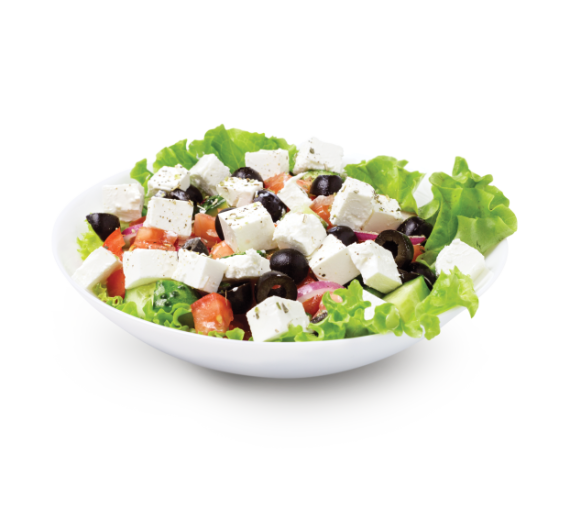

Turkey Salads

Description
This chopped turkey salad with grapes is a cinch to make with precooked turkey and can be the star of your barbecue or picnic dinner.
Ingredients
- 2 cups cooked turkey, cut into bite-sized chunks, or more to taste
- ⅓ cup mayonnaise
- 1 tablespoon mayonnaise
- 3 tablespoons Dijon mustard
- 2 tablespoons red wine vinegar
- 1 medium head Romaine lettuce, cut into bite-sized pieces
- 1 cup mixed salad greens
- 3 stalks celery, sliced
- 1 small red onion, finely sliced
- ¾ cup halved seedless red grapes
- 6 tablespoons olive oil
- 4 tablespoons red wine vinegar
- 1 pinch white sugar
- salt and ground black pepper to taste
- ½ cup shelled salted peanuts, or more to taste
Steps
- Mix cooked turkey, 1/3 cup plus 1 tablespoon mayonnaise, mustard,
red wine vinegar together in a bowl and set aside.
- Mix Romaine lettuce, salad greens, celery, red onion, grapes, olive oil, vinegar, sugar, salt, and pepper
together in a large pretty serving bowl and toss to blend.
- Make a depression in the center of the lettuce mixture in the serving bowl.
Mound the turkey mixture in the center and sprinkle with peanuts.